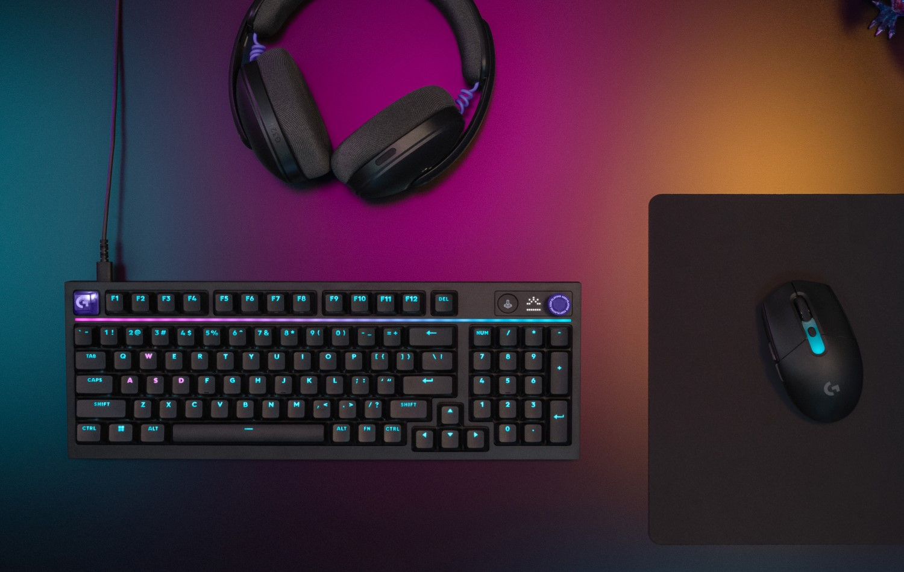
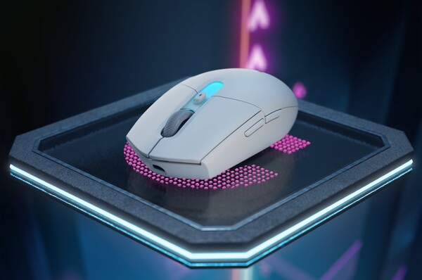
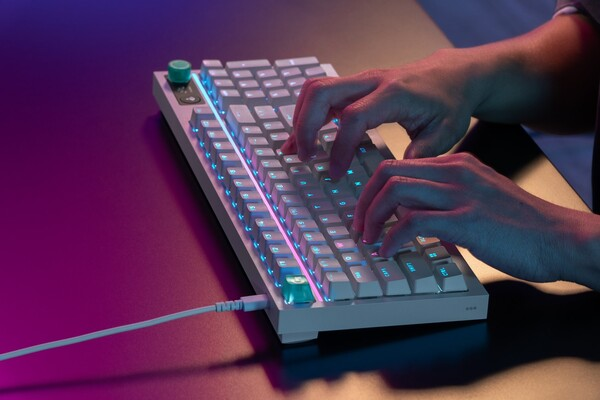

로지텍 G304 X SUPERLIGHT 국내 출시, 59g 초경량 무선마우스 스펙 총정리 (HERO 44K·배터리 130시간)
안녕하세요. 영원한도시입니다. 요즘 새 마우스 알아보시는 분들이 부쩍 많아진 것 같은데, 주인장도 데스크 정리하다가 무게 얘기가 계속 눈에 밟히더라고요. 예전엔 100g 안팎이면 가볍다고 좋아했는데, 요즘 초경량 무선 마우스 시장은 확실히 기준이 한 단계 올라갔죠.
그러던 중에 로지텍이 지난 6월 30일 국내에 'G304 X SUPERLIGHT' 무선 게이밍 마우스를 정식 출시했다는 소식을 접했습니다. 주인장이 아직 이 제품을 직접 손에 쥐어본 건 아닙니다. 그래서 이번 글은 실사용 후기가 아니라, 국내 출시 스펙을 하나하나 정리해서 '살까 말까' 고민하시는 분들 판단에 도움이 되도록 풀어보는 스펙 정리ㆍ구매 판단형 글이라는 점 먼저 밝히고 시작할게요.
1. 로지텍 G304 X SUPERLIGHT, 뭐가 새로 나온 거냐 - G304 후속 맞습니다
'G304 X SUPERLIGHT'는 로지텍이 오랫동안 스테디셀러로 팔아온 'G304 LIGHTSPEED' 무선 마우스의 클래식한 외형을 이어받으면서, 속은 거의 다시 설계한 신모델이라고 보시면 됩니다. 게이밍 기어를 좀 더 쉽게 경험할 수 있게 만든 로지텍 'G3 시리즈' 라인업 확장의 일환으로 나온 제품인데요, 같은 날 유선 기계식 키보드 'G316 X 98'도 함께 출시됐습니다(키보드 얘기는 아래서 잠깐 더 할게요).
국내 출시 기본 정보부터 표로 정리하면 이렇습니다.
| 구분 | 내용 |
|---|---|
| 국내 출시일 | 2026년 6월 30일 |
| 정가 | 109,000원 |
| 색상 | 블랙 / 화이트 |
| 연결 방식 | LIGHTSPEED 무선 + 블루투스 + USB-C 유선(트리플 모드) |
| 소프트웨어 | 로지텍 G HUB |
참고로 일본 출시는 이보다 보름 넘게 늦은 7월 16일로 잡혀 있더라고요. 국내가 먼저 풀린 셈이니, 정발로 사는 쪽이 딱히 손해 보는 타이밍은 아닌 것 같습니다.
이름 관련해서 한 가지 팁을 드리면, 북미ㆍ유럽 등 서구권에서는 이 제품이 'G305 X SUPERLIGHT'라는 이름으로 팔립니다. 아시아 쪽만 'G304 X'고 사실상 같은 제품이니, 해외 리뷰나 유튜브 언박싱 영상을 찾아보실 땐 'G305 X'로도 같이 검색해 보시는 걸 추천드려요.

블랙 컬러 'G304 X SUPERLIGHT'(오른쪽 마우스패드 위)와 'G316 X 98'(왼쪽 키보드)을 함께 배치한 컷입니다.
이미지 출처: 로지텍코리아 보도자료(케이벤치 배포본, 2026-06-30) · 네이버 붙여넣기 시 사진 재업로드 필요
2. 무게가 진짜 핵심 - 59g, 기존보다 40g 가벼워졌다
이 마우스에서 제일 먼저 봐야 할 숫자는 딱 하나, 약 59g입니다. 기존 국내 판매되던 'G304 LIGHTSPEED'가 99g이었으니까, 40g 가까이 줄인 셈인데요. 이름만 비슷하고 사실상 완전히 다른 모델로 봐야 한다는 게 여러 매체가 공통으로 짚는 부분입니다.
40g이면 감이 잘 안 오실 수도 있는데, 500원짜리 동전 다섯 개 남짓 무게라고 생각하시면 됩니다. 손목 스냅으로 빠르게 움직이는 FPS류 게임에서는 이 정도 차이가 체감상 꽤 크게 느껴진다고들 하더라고요.

화이트 컬러 'G304 X SUPERLIGHT' 단독 컷인데요, 옆면 버튼 배치까지 잘 보이시죠.
이미지 출처: 로지텍코리아 보도자료(매드클럽 배포본, 2026-06-30) · 네이버 붙여넣기 시 사진 재업로드 필요
3. 센서ㆍ트래킹 성능 - HERO 44K 센서를 실었습니다
무게만 줄이고 성능이 물러났으면 아쉬웠을 텐데, 센서는 로지텍 G 상위 라인에 쓰이는 HERO 44K 센서를 실었습니다. DPI 범위는 100~44,000으로 폭넓고, 최대 속도 678 IPS 이상, 최대 가속도 40G 이상을 지원한다고 공식적으로 밝혔는데요.
수치만 나열하면 와닿기 어려우니 정리하면, 저속으로 정밀하게 조준하는 상황부터 빠르게 화면을 훑는 플릭샷까지 센서가 놓치지 않고 다 잡아준다는 뜻입니다. 참고로 'HERO 44K'가 공식 명칭이니, 커뮤니티에서 도는 다른 세대 명칭이랑 헷갈리지 않게 주의하시는 게 좋아요.
4. 연결성ㆍ응답속도 - 무선ㆍ블루투스ㆍ유선 다 되는 트리플 모드
연결은 LIGHTSPEED 2.4GHz 무선ㆍ블루투스ㆍUSB-C 유선, 이렇게 세 가지를 다 지원하는 '트리플 모드'입니다. 게임할 땐 LIGHTSPEED로 붙이고, 노트북 들고 다니며 문서작업할 땐 블루투스로 바꾸고, 배터리 걱정 없이 유선으로도 쓸 수 있다는 얘기죠. 한 대로 데스크탑ㆍ노트북ㆍ외부 작업까지 다 커버하고 싶은 분들한테는 확실히 매력적인 구성입니다.
응답속도 관련해서는, 폴링레이트가 기본 1,000Hz(1ms)를 지원합니다. 여기서 더 끌어올려 최대 8,000Hz(8kHz)까지 쓰려면 별매인 'PRO LIGHTSPEED 무선 리시버'를 따로 연결해야 하고요. 다만 이 8kHz용 리시버가 국내에 정식으로 함께 유통되는지는 아직 확인이 더 필요한 부분이라, 8kHz 반응속도까지 노리고 계신 분이라면 구매 전에 리시버 유통 여부를 한 번 더 체크해 보시는 게 좋겠습니다.
5. 배터리ㆍ충전 - 130시간 이상, 2분 충전 3.5시간
배터리는 완충 1회 기준 130시간 이상 사용을 공식적으로 밝혔고, 2분만 충전해도 최대 3.5시간을 더 쓸 수 있는 급속충전도 지원합니다. 다만 이 130시간이 RGB 조명을 켠 상태 기준인지 끈 상태 기준인지, 어떤 연결 모드 기준인지 같은 세부 조건까지는 따로 공개되지 않았더라고요. 그러니 '130시간 이상'이라는 상한선 자체는 믿으시되, 실사용 시간은 조명 밝기나 연결 방식에 따라 달라질 수 있다고 보시는 게 맞습니다.
배터리 방식도 세대가 바뀐 부분이라 짚고 갈게요. 기존 'G304 LIGHTSPEED'(공식 스펙 99g)는 AA 건전지를 1개 넣어 쓰는 교체형이었습니다. 완충이라는 개념 자체가 없고 건전지가 닳으면 새로 갈아 끼우는 방식이었는데, 대신 공식 사용시간이 최대 250시간으로 꽤 길었죠. 반면 이번 'G304 X SUPERLIGHT'는 내장 배터리를 USB-C로 충전하는 방식으로 완전히 바뀌었습니다. 숫자만 보면 250시간 쪽이 더 길어 보이지만, 건전지를 갈아 끼우는 번거로움ㆍ무게를 감수하느냐, 충전 편의성과 경량화를 택하느냐의 트레이드오프라고 보시면 됩니다. 주인장 개인적으로는 요즘 무선 기기 대부분이 충전형으로 넘어간 흐름을 생각하면, 130시간도 실사용에선 충분히 여유 있는 수치라고 봅니다.
6. 조명ㆍ소프트웨어ㆍ버튼 - LIGHTSYNC RGB에 G HUB까지
조명은 취향대로 색과 패턴을 바꿀 수 있는 커스터마이징 RGB(LIGHTSYNC)가 들어갔고, 감도 설정이나 온보드 프로필 저장 같은 세부 설정은 로지텍 G HUB 소프트웨어에서 관리합니다. G HUB 하나로 'G304 X SUPERLIGHT'뿐 아니라 같이 나온 'G316 X 98' 키보드 설정까지 한 곳에서 만질 수 있다는 점도 참고하시면 좋겠네요.
버튼은 프로그래머블 6개로 공식 공개돼 있어서, G HUB에서 버튼마다 원하는 기능을 따로 지정해 쓸 수 있습니다. 초경량 마우스라고 버튼 커스터마이징까지 아쉬운 건 아니라는 얘기죠.
7. 아직 확인이 더 필요한 부분 - 스위치 종류만 미공개
한 가지, 아직 공식적으로 안 잡힌 부분도 있는데요. 바로 스위치 종류입니다. 커뮤니티에서는 옴론 계열일 거라는 추측이 도는데, 공식 확인된 건 아니에요. 스위치 종류는 공식 스펙이 갱신되면 확정될 텐데, 지금은 비어 있다고 보시면 됩니다.
한 가지는 확정적으로 말씀드릴 수 있는데, 파워플레이 무선충전 패드는 지원하지 않습니다. 파워플레이로 무선충전까지 챙기시려던 분들은 이 부분 꼭 체크하세요.
참고로 같은 날 함께 나온 유선 기계식 키보드 'G316 X 98'은 8kHz 폴링레이트에 핫스왑 스위치ㆍPBT 키캡ㆍ가스켓 마운트까지 챙긴 물건인데, 이건 마우스가 아니니 오늘은 여기까지만 짚고 넘어갈게요.

같이 출시된 유선 기계식 키보드 'G316 X 98' 화이트 컬러 타건 컷입니다.
이미지 출처: 로지텍코리아 보도자료(매드클럽 배포본, 2026-06-30) · 네이버 붙여넣기 시 사진 재업로드 필요
8. 그래서 이 마우스, 누구한테 맞을까 - 구매 판단 포인트
스펙만 쭉 늘어놓으면 판단이 오히려 더 어려우니, 구매 판단 포인트로 정리해볼게요.
이런 분들께 맞습니다
ㆍ초경량 무선 마우스로 FPSㆍ에임 게임 손맛을 챙기고 싶은 분
ㆍ데스크탑ㆍ노트북ㆍ외부 작업 오가며 무선ㆍ블루투스ㆍ유선을 다 쓰고 싶은 분
ㆍ기존 'G304' 쓰다가 무게 하나 때문에 갈아타고 싶었던 분
고려하실 점
ㆍ파워플레이 무선충전 미지원, 스위치 종류 미공개는 앞서 7절에서 짚은 그대로입니다
ㆍ정가 109,000원이 부담될 수 있어요. 실제로 루리웹 등 커뮤니티에서는 이 가격대에 비싸다는 반응, 그리고 상대적으로 저렴한 'G309' 같은 라인업과 비교하는 목소리도 적지 않더라고요
참고한 곳
· 로지텍코리아 보도자료 — 신규 게이밍 마우스ㆍ키보드 'G304 X SUPERLIGHT'ㆍ'G316 X 98' 출시 (케이벤치, 2026-06-30)
· 같은 보도자료 매드클럽 배포본 (2026-06-30) — 59gㆍHERO 44Kㆍ100~44,000 DPIㆍ678 IPSㆍ40Gㆍ130시간
· 로지텍 게이밍 스토어 — G304 X SUPERLIGHT 판매 페이지(정가 109,000원)
▶ 같이 보면 좋은 글: 게이밍 키보드 축 비교 (청축·적축·갈축)